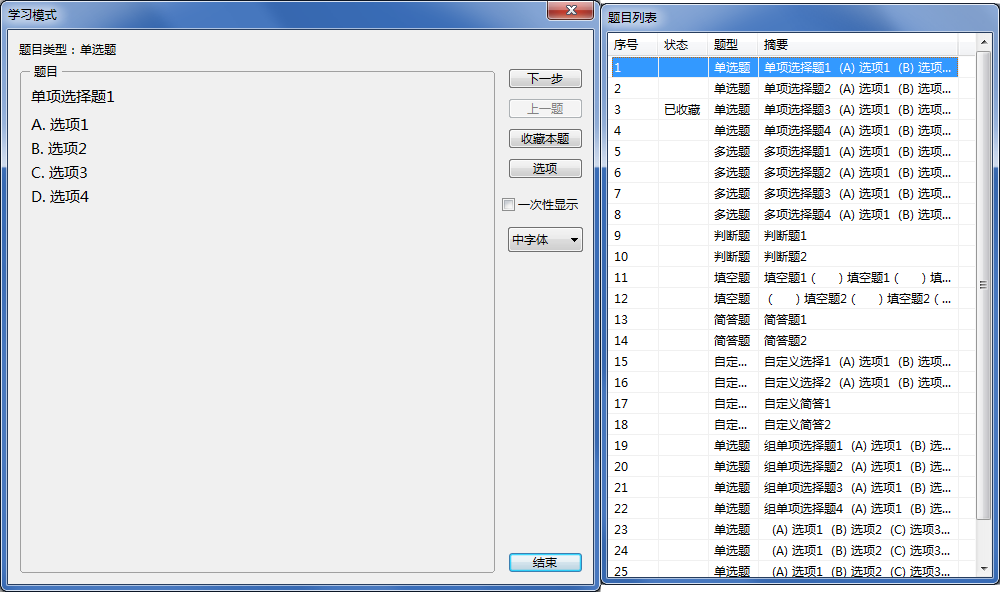
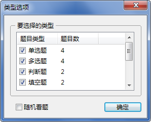

开始学习
开始学习
学习当前被选中题库的题目。

“学习模式”采用“默想+浏览”的学习方法，即首先查看题目并在心中默想答案，然后浏览正确答案进行自我验证。
双击右侧题目列表中的题目可以快速跳转。
逐步显示答案。以下说明的初始状态为：“题目”窗格中显示题目文本，“答案”与“题目解析”窗格中没有显示。
- 单选题/多选题/判断题：点击一次显示答案与解析（如果有），再点击一次显示下一道题目；
- 填空题：每点击一次显示一个空白的答案，显示最后一个空白答案的同时显示解析（如果有），再点击一次显示下一道题目；
- 简答题：每点击一次显示一个自然段的答案，显示最后一个自然段的同时显示解析（如果有），再点击一次显示下一道题目。
浏览完最后一道题目后，将重新定位至第一道题目。
仅针对填空题和简答题，勾选后，点击一次“下一步”即显示完整的答案，不再每次只显示一部分答案。

勾选希望学习的题目类型。勾选“随机看题”后，会将题目打乱顺序，且每次浏览完最后一道题目后均会再次打乱。
GX Software 2020-2021
V2.0